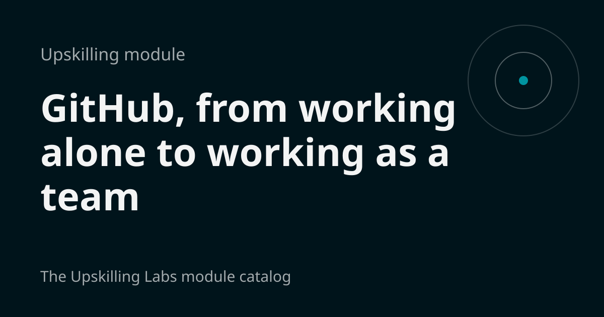

Not yet reviewed. Nobody has checked this learning material yet, so treat it as a draft.
About this module
The module's metadata, from the front matter of modules/github-solo-to-team.md.
- Learning outcome
- Open a branch, make a pull request, review a teammate's, and merge it, without help.
- Kind
- Upskilling module, for learners
- Output
- Workshop, has an output. Your team's repo with one merged pull request from each person and a written rule for who reviews and merges.
- Stage
- Prep before a Cycle, During a Cycle
- Scale
- 1:few, 1:cohort/public
- Delivered by
- A mentor who uses GitHub at work
- Maintained by
- a C04 maintainer, a Poderator
- Reviewed by
- Not yet
- Timing
- Before an attempt, When stuck
- Learner stage
- dependent, interested
- How support fades
- The mentor drives the first pull request on screen, the team does the second with the mentor watching, and the third alone.
- Maps to
- Version control and code review (agile)
- Time
- 60 minutes
- Prerequisites
- A GitHub account, Connected Claude to GitHub once
- Scope
- General
- Tags
- github, git, team-setup
- Status
- draft
- Optional
- Yes, like every module in the catalog. GitHub training is validated by the Labs as needed to join the ecosystem.
- A private way in
- Try the first pull request in a practice repo of your own before the session. Nobody sees it.
- A way out
- If you're stuck for more than fifteen minutes, post in your team channel or pair with the mentor. Being stuck here is normal.
Made-up example for the prototype, formed from made-up situation logs. Not reviewed.
Overview
Most people meet GitHub alone: one person, one copy, pushing straight to main. A team can't work that way, because two people changing the same file at once overwrite each other. A team works through branches (a separate line of changes), pull requests (asking the team to take your changes) and review (someone else reads them first).
Three things trip people up most often:
- The GitHub app for Claude has to be installed on the team's organization, not only on your own account.
- Pushes to main can be blocked on purpose. That's the team protecting the shared copy, not something you broke.
- A pull request nobody merges is as stuck as no pull request. Teams need a rule for who merges.
Exercises
- Alone: in a practice repo, make a branch, change one line of the README, open a pull request and merge it yourself.
- With others: each teammate opens a pull request to the team repo. Review someone else's, leave one comment, and merge it.
- With others: write your team's rule for who reviews and merges, and put it in the README.
For facilitators
Ask each person what they expect to happen before each step, then let them do it. Don't take the keyboard. When a push is rejected, ask what the message says before explaining it. Most of the session is waiting while people try, and that's the point.
Resources
- GitHub's own guide to pull requests
- The team setup notes in your Cycle's dashboard
Formed from
The situation logs this module grew from: what the problem was and what worked.
The problem. A participant connected Claude to GitHub, but the team's repo didn't show up in the list. They'd been stuck for most of an evening.
What worked. The repo belonged to the team's organization, and the GitHub app hadn't been installed there. We found the install page together and they did the rest.
The problem. Two teammates had been working alone in their own copies. When they tried to put their work together, pushes to main were rejected and they thought they'd broken something.
What worked. Drawing the branch on a whiteboard, then each of them opening a pull request instead of pushing. I asked what they expected to happen before each step rather than doing it for them.
The problem. Our team had three open pull requests and nobody knew who was allowed to merge them, so nobody did.
What worked. We agreed in the team channel that whoever didn't write it reviews and merges it. Took five minutes once someone asked.